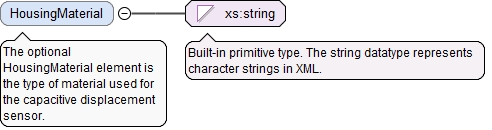
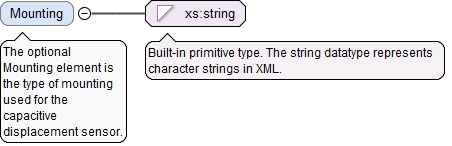

The (required) UnitName attribute is the unit name for the UserDefinedUnitValueType.
Source
<xs:element name="MinOperatingVoltage" type="UserDefinedUnitValueType" minOccurs="0"><xs:annotation><xs:documentation>The optional MinOperatingVoltage element is the minimum voltage at which the capacitive displacement sensor could produce usable measurements.</xs:documentation></xs:annotation></xs:element>
The (required) UnitName attribute is the unit name for the UserDefinedUnitValueType.
Source
<xs:element name="MaxOperatingVoltage" type="UserDefinedUnitValueType" minOccurs="0"><xs:annotation><xs:documentation>The optional MaxOperatingVoltage element is the maximum voltage at which the capacitive displacement sensor could produce usable measurements.</xs:documentation></xs:annotation></xs:element>
<xs:element name="MinMeasuringDistance" type="LinearValueType" minOccurs="0"><xs:annotation><xs:documentation>The optional MinMeasuringDistance element is the minimum measuring distance of the capacitive displacement sensor.</xs:documentation></xs:annotation></xs:element>
<xs:element name="MaxMeasuringDistance" type="LinearValueType" minOccurs="0"><xs:annotation><xs:documentation>The optional MaxMeasuringDistance element is the maximum measuring distance of the capacitive displacement sensor.</xs:documentation></xs:annotation></xs:element>
The (required) UnitName attribute is the unit name for the UserDefinedUnitValueType.
Source
<xs:element name="TemperatureStability" type="UserDefinedUnitValueType" minOccurs="0"><xs:annotation><xs:documentation>The optional TemperatureStability element is the temperature stability of the capacitive displacement sensor.</xs:documentation></xs:annotation></xs:element>
<xs:element name="MinimumTargetDiameter" type="LinearValueType" minOccurs="0"><xs:annotation><xs:documentation>The optional MinimumTargetDiameter element is the minimum diameter of the target to be measured.</xs:documentation></xs:annotation></xs:element>
The optional HousingMaterial element is the type of material used for the capacitive displacement sensor.
Diagram

Type
xs:string
Properties
content
simple
minOccurs
0
Source
<xs:element name="HousingMaterial" type="xs:string" minOccurs="0"><xs:annotation><xs:documentation>The optional HousingMaterial element is the type of material used for the capacitive displacement sensor.</xs:documentation></xs:annotation></xs:element>
The optional Mounting element is the type of mounting used for the capacitive displacement sensor.
Diagram

Type
xs:string
Properties
content
simple
minOccurs
0
Source
<xs:element name="Mounting" type="xs:string" minOccurs="0"><xs:annotation><xs:documentation>The optional Mounting element is the type of mounting used for the capacitive displacement sensor.</xs:documentation></xs:annotation></xs:element>
The required id attribute is the QIF id of the measurement resource, used for referencing.
Source
<xs:complexType name="CapacitiveSensorType"><xs:annotation><xs:documentation>The CapacitiveSensorType defines a capacitive displacement sensor.</xs:documentation></xs:annotation><xs:complexContent><xs:extension base="DetachableSensorBaseType"><xs:sequence><xs:element name="MinOperatingVoltage" type="UserDefinedUnitValueType" minOccurs="0"><xs:annotation><xs:documentation>The optional MinOperatingVoltage element is the minimum voltage at which the capacitive displacement sensor could produce usable measurements.</xs:documentation></xs:annotation></xs:element><xs:element name="MaxOperatingVoltage" type="UserDefinedUnitValueType" minOccurs="0"><xs:annotation><xs:documentation>The optional MaxOperatingVoltage element is the maximum voltage at which the capacitive displacement sensor could produce usable measurements.</xs:documentation></xs:annotation></xs:element><xs:element name="MinMeasuringDistance" type="LinearValueType" minOccurs="0"><xs:annotation><xs:documentation>The optional MinMeasuringDistance element is the minimum measuring distance of the capacitive displacement sensor.</xs:documentation></xs:annotation></xs:element><xs:element name="MaxMeasuringDistance" type="LinearValueType" minOccurs="0"><xs:annotation><xs:documentation>The optional MaxMeasuringDistance element is the maximum measuring distance of the capacitive displacement sensor.</xs:documentation></xs:annotation></xs:element><xs:element name="TemperatureStability" type="UserDefinedUnitValueType" minOccurs="0"><xs:annotation><xs:documentation>The optional TemperatureStability element is the temperature stability of the capacitive displacement sensor.</xs:documentation></xs:annotation></xs:element><xs:element name="MinimumTargetDiameter" type="LinearValueType" minOccurs="0"><xs:annotation><xs:documentation>The optional MinimumTargetDiameter element is the minimum diameter of the target to be measured.</xs:documentation></xs:annotation></xs:element><xs:element name="HousingMaterial" type="xs:string" minOccurs="0"><xs:annotation><xs:documentation>The optional HousingMaterial element is the type of material used for the capacitive displacement sensor.</xs:documentation></xs:annotation></xs:element><xs:element name="Mounting" type="xs:string" minOccurs="0"><xs:annotation><xs:documentation>The optional Mounting element is the type of mounting used for the capacitive displacement sensor.</xs:documentation></xs:annotation></xs:element></xs:sequence></xs:extension></xs:complexContent></xs:complexType>